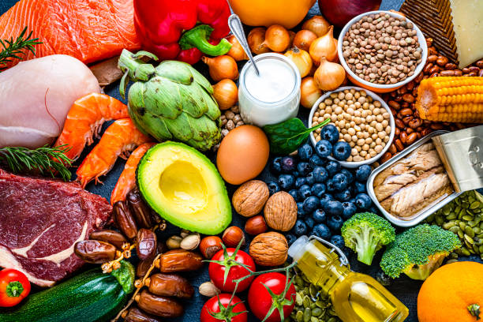

Nutrición: La Base de tu Éxito
La alimentación es un pilar fundamental en cualquier proceso de pérdida de peso y definición muscular. Para lograr tus objetivos, es esencial adoptar hábitos alimenticios saludables y equilibrados. Aquí te dejamos algunas recomendaciones:
- Frutas y Verduras: Asegúrate de incluir una amplia variedad de frutas y verduras en tu dieta. Son ricas en vitaminas, minerales y fibra, lo que te ayudará a sentirte saciado.
- Proteínas Magras: Opta por fuentes de proteínas como pollo, pavo, pescado, legumbres y productos lácteos bajos en grasa. Las proteínas son esenciales para la reparación y el crecimiento muscular.
- Granos Enteros: Prefiere granos enteros como arroz integral, quinoa y avena. Estos alimentos son más nutritivos y te proporcionan energía sostenida.
- Grasas Saludables: Incorpora grasas saludables en tu dieta, como aguacate, nueces, semillas y aceite de oliva. Estas grasas son importantes para la salud general y la saciedad.
Recuerda mantener una adecuada hidratación bebiendo suficiente agua a lo largo del día.
